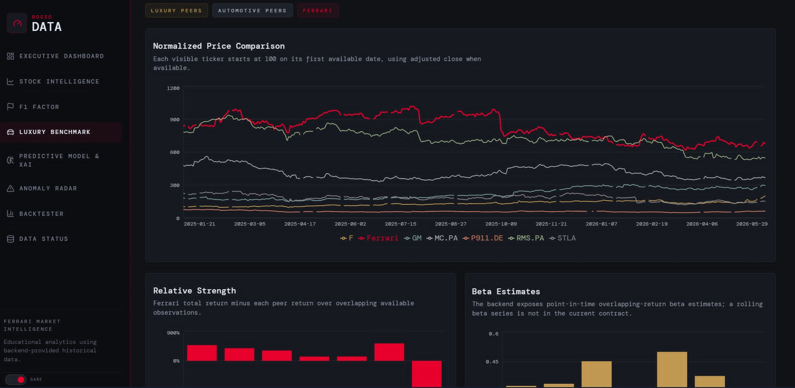

projects
A selection of projects I've designed, built and shipped. Most are open source — feel free to dig into the code.





 IBM Bob Hackathon
IBM Bob Hackathon

 AMD Hackathon
AMD Hackathon
 Agora Hackathon
Agora Hackathon